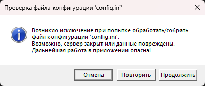

Ошибка подключения к серверу возникает, когда программа не может установить соединение с сервером MySQL. Это одна из самых частых проблем при первом запуске или после изменения конфигурации сети.

Рис. 1. Сообщение об ошибке подключения к серверу
Возможные причины и способы устранения
| Причина | Решение |
|---|---|
| Сервер MySQL не запущен | Запустите сервер MySQL (через службы Windows, XAMPP, WAMP или командную строку) |
| Неверный адрес сервера в config.ini | Проверьте параметр server в файле config.ini (localhost, 127.0.0.1 или IP-адрес) |
| Неверный порт | Проверьте параметр port (по умолчанию 3306). Если сервер использует другой порт, укажите его |
| Брандмауэр блокирует порт | Добавьте порт MySQL (3306) в исключения брандмауэра |
| Неверный логин или пароль | Проверьте параметры user и password в config.ini |
| Сервер недоступен по сети | Проверьте сетевое подключение, выполните ping до сервера |
| Слишком маленький таймаут подключения | В коде программы ConnectionTimeout установлен в 1 секунду — при медленном соединении может не хватать. При повторной попытке таймаут сбрасывается |
Диалог обработки ошибки подключения
Рис. 2. Диалоговое окно с вариантами действий при ошибке подключения
При возникновении ошибки подключения программа показывает диалог с тремя вариантами:
— «Отмена» — завершить работу приложения.
— «Повторить» — попытаться подключиться снова (таймаут сбрасывается на 1 секунду).
— «Продолжить» — продолжить работу с настройками по умолчанию (локальный сервер, база данных ArchiveFund). Используйте с осторожностью!
Проверка подключения к MySQL
Для диагностики можно выполнить проверку подключения вручную:
1. Откройте командную строку (cmd).
2. Выполните команду: `mysql -h [сервер] -P [порт] -u [пользователь] -p`
3. Введите пароль. Если подключение успешно, вы увидите приглашение MySQL.
После исправления ошибки
После устранения причины ошибки перезапустите программу. Если проблема сохраняется, проверьте файл config.ini и убедитесь, что сервер MySQL действительно запущен.